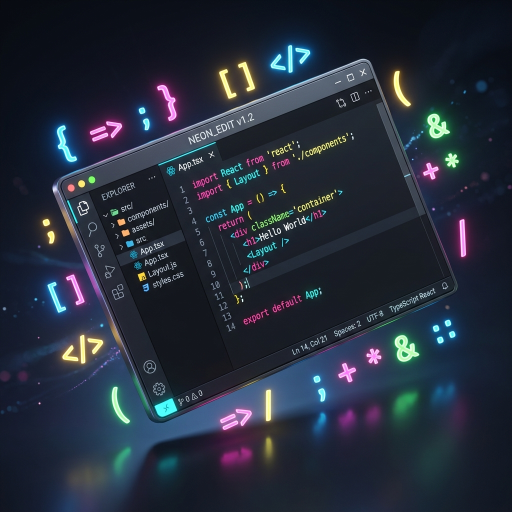

Hello, I'm Suyash Jain
Aspiring
|
B.Tech Student at Motilal Nehru National Institute of Technology Allahabad. I transform complex logic into scalable, user-centric software. Passionate about Full Stack Engineering, System Design, and Algorithmic Efficiency.
Who I Am.
I am a creative logic-builder driven by precision. Currently pursuing my B.Tech at Motilal Nehru National Institute of Technology Allahabad, I bridge the gap between abstract algorithms and tangible software solutions.
My technical philosophy is simple: write code that humans can read and machines can optimize. From solving 400+ problems on LeetCode to architecting full-stack MERN applications, I treat every challenge as an opportunity to refine my craft.
I am looking for a challenging role where I can contribute to backend scalability, frontend interactivity, and overall system robustness.
Technical Expertise.
Software Engineering
I specialize in designing and implementing robust, scalable software systems. My focus lies in low-level system design using C++ and Golang, ensuring efficient memory management and high concurrency. I apply clean architecture patterns to build maintainable backend services that can handle high-throughput loads with minimal latency.
- Microservices Architecture
- REST & gRPC API Development
- Database Optimization & Indexing
Full Stack Development
I build end-to-end web applications that are both functional and visually engaging. Using the MERN Stack (MongoDB, Express, React, Node.js), I craft responsive user interfaces and secure server-side logic. My workflow includes state management with Redux, component-driven design, and integrating third-party APIs for seamless functionality.
- Responsive UI/UX Design
- Authentication & Security
- Real-time Websockets
Data & Algorithms
With a strong mathematical foundation, I leverage Machine Learning frameworks like TensorFlow and Scikit-Learn to extract insights from data. I am also an active competitive programmer, using advanced Data Structures and Algorithms to solve complex computational problems efficiently and optimize code performance.
- Predictive Modeling & Analytics
- Graph & Dynamic Programming
- Performance Profiling
Languages
Frontend
Backend
Databases
Tools & DevOps
Data & AI
Featured Work.
Online Compiler
A powerful, browser-based code execution engine supporting multiple languages (Python, Java, Rust, JS). Designed to provide low-latency feedback for seamless coding practice.
Key Features:
- Real-time code execution with sandboxed environments.
- Multi-language syntax highlighting strings.
- Custom output console with error handling.
- Responsive interface for mobile coding.

Power Forecasting of Solar plant
A deep learning model utilizing Temporal Fusion Transformer for accurate multi-horizon time-series forecasting across varying prediction intervals.
Key Features:
- Accurate multi-horizon forecasting for solar power generation.
- Modeled static, past-observed, and known-future features.
- Learned embeddings and variable selection networks for heterogeneous inputs.
Go Multithreaded Web Server
A modern, secure, and concurrent web server built with Go. Features HTTPS, a real-time dashboard, file uploads, and rate limiting.
Key Features:
- Concurrent handling of multiple clients using Go's goroutines.
- Rate Limiting middleware to prevent abuse.
- Graceful Shutdown for finishing in-progress requests safely.
Education & Honors.
Academic History
Motilal Nehru National Institute of Technology Allahabad
B.Tech in Engineering Mechanics
Current CPI: 9.11 (5th Sem)
Focusing on Computational mechanics, Data Structures, and Software Development life cycles.
Kendriya Vidyalaya
Class XII (CBSE)
Grade: 94.4%
Excellence in Mathematics and Physics. School Topper in Computer Science.
Kendriya Vidyalaya
Class X (CBSE)
Grade: 92.8%
Achievements
3rd Position
Triathlon Software, Avishkar 2024, Motilal Nehru National Institute of Technology Allahabad
Finalist & Top 3
InnoDev & Hackify Leaderboard, Avishkar 2025, Motilal Nehru National Institute of Technology Allahabad
Hack36 Selection
Selected for Hack36 2024 (offline mode), Motilal Nehru National Institute of Technology Allahabad's flagship hackathon
Positions of Responsibility
-
Web Team Member, SMP (2024-Present)
Maintained and improved the Student Mentorship Portal.
-
Mentor, Student Mentorship Program
Guiding juniors in web development and academics.
-
Member, Dramatics Society (2023-24)
Active participant in cultural events.
Let's Engineer The Future.
I am seeking Software Development Engineering (SDE) roles where I can apply my computational skills to build impactful software.